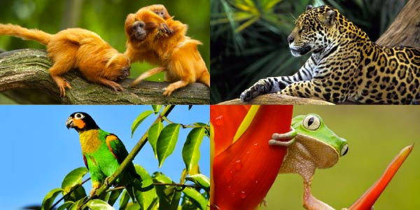
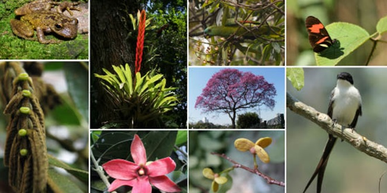
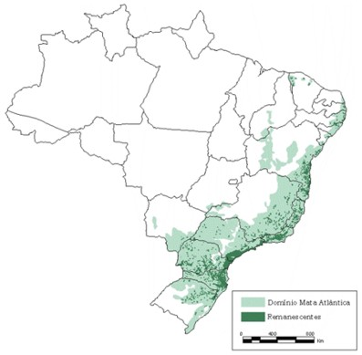

A Mata Atlântica se estende ao longo de 17 estados brasileiros: Rio Grande do Sul, Santa Catarina, Paraná, São Paulo, Goiás, Mato Grosso do Sul, Rio de Janeiro, Minas Gerais, Espírito Santo, Bahia, Alagoas, Sergipe, Paraíba, Pernambuco, Rio Grande do Norte, Ceará e Piauí.
Atualmente, vivem na Mata Atlântica cerca de 72% da população brasileira (IBGE, 2014).
A fauna por exemplo, 261 espécies conhecidas de mamíferos. Isto significa que, se acrescentássemos à nossa lista inicial o tamanduá-bandeira, o tatu-peludo , a jaguatirica, e o cachorro-do-mato, ainda faltariam 252 mamíferos para completar o total de espécies dessa classe na Mata Atlântica. Também tem 1020 espécies de pássaros, 197 de répteis, 340 de anfíbios e 350 de peixes que são conhecidos até hoje no bioma.


A Mata Atlântica apresenta estruturas e composições florísticas tão diferenciadas. Uma das florestas mais ricas em biodiversidade no planeta, a Mata Atlântica detém o recorde de plantas lenhosas (angiospermas) por hectare (450 espécies no Sul da Bahia), cerca de 20 mil espécies vegetais, sendo 8 mil delas endêmicas, além de recordes de quantidade de espécies e endemismo em vários outros grupos de plantas.
